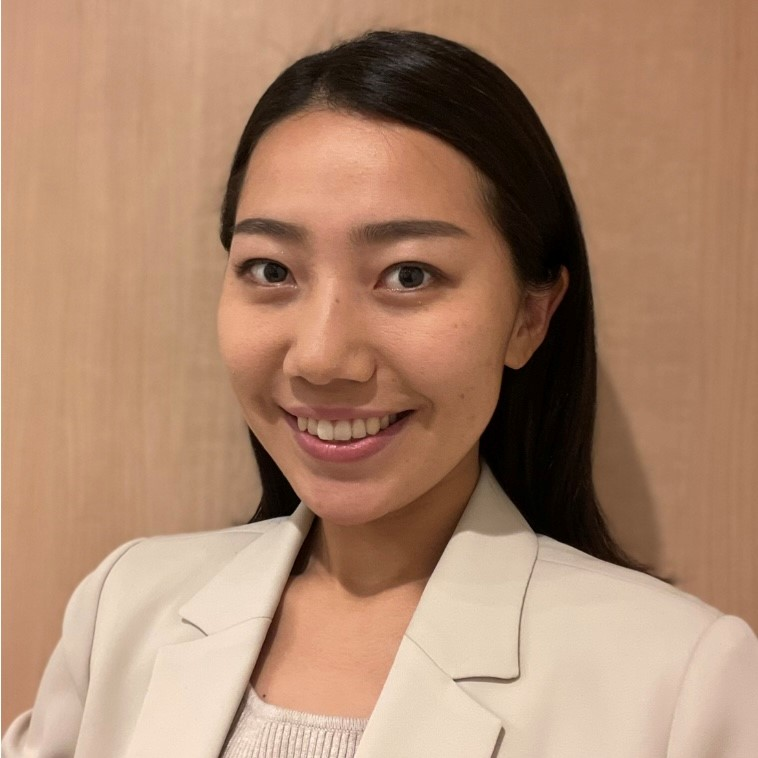

I am a sales and marketing enthusiast trying to boost my career in IT marketing.
Below is my career summary.
Career History
2018/4 ― present
Sales and Marketing Representative at Harada Corporation
2016/6 ― 2016/8
Intern at SHINDO USA
Annual Job Summary